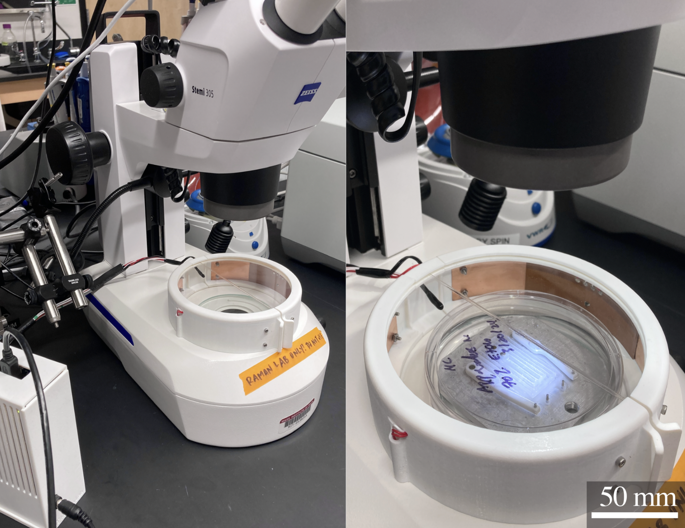
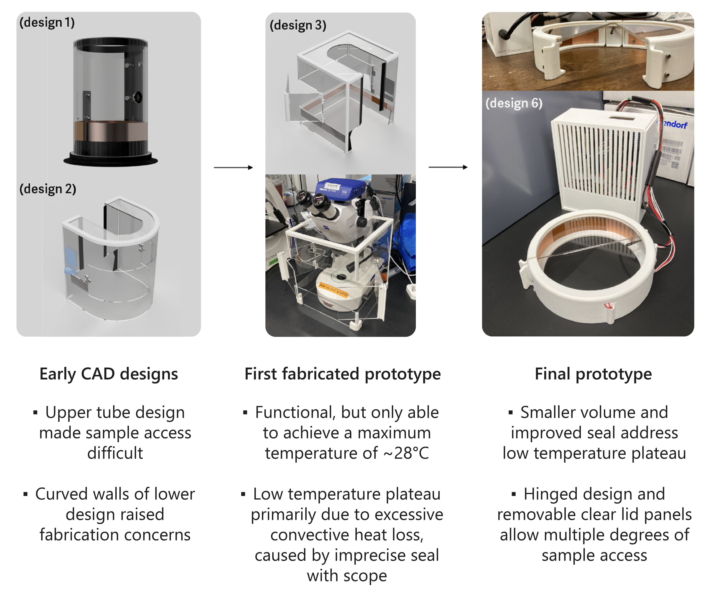
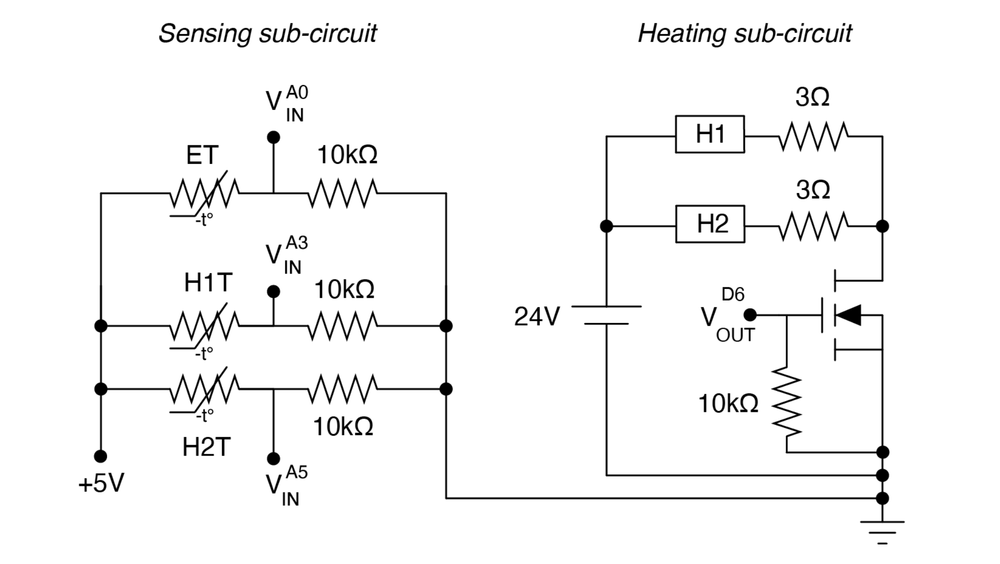
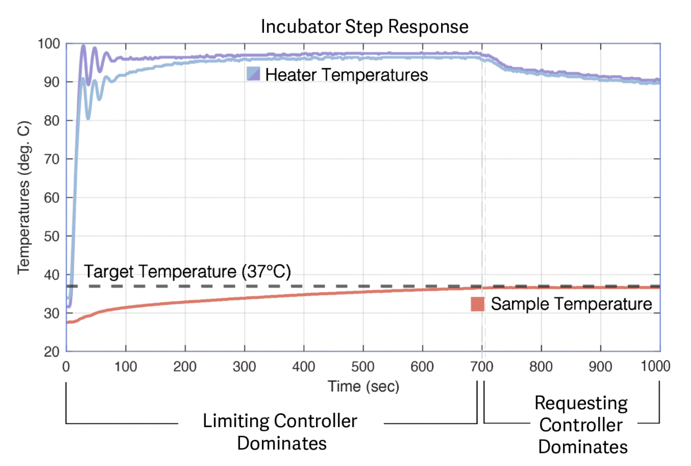

Custom Incubator for Imaging
Undergraduate research project in the Raman Lab, co-advised by Prof. Martin Culpepper and Prof. Ritu Raman.

Background
Removing thermally sensitive samples from their ideal temperature conditions in traditional
incubators for extended periods is often necessary for in-depth imaging, but can adversely
affect the health and viability of the samples.
I designed and built this mini incubator to protect sensitive samples during
long experiments that require continuous imaging on a microscope. By maintaining a stable 37°C
environment around a 100mm petri dish, this incubator enables both long periods of imaging and
easy user interaction with samples. A multi-layer PID control system takes multiple sensor inputs into
account for precise temperature control, while a small footprint allows for frequent relocation
and storage in a lab where bench space is limited.
You can read about some of the experiments enabled by this incubator in
this publication.
Design Overview & Fabrication
A selection of revisions in the design evolution of this incubator can be seen to the right. Early
designs in CAD were revised based on feedback about the incubator's usability and ease
of fabrication, while fabricated prototypes were revised largely based on practical performance
shortcomings (for example, initially oversimplified power calculations didn't sufficiently account
for convective heat loss through an imperfect seal between the first prototype of the incubator
and the microscope).
The fabrication process of the final prototype of this incubator is quite accessible, requiring a
limited selection of easily operated machines and low cost materials (<$150 total).
Top window panels were laser cut from acrylic, while the main walls, hinges, and electronics housing were
3D printed on a Stratasys J35 printer. Thin copper heat distribution linings for the walls were cut on a metal shear.
Please feel free to contact me if you'd like to build one of these incubators
for your own use—I'm happy to provide relevant files and further fabrication instructions over email.


The electrical system of this incubator can be thought of in two sections: a higher power
heating circuit, and a lower power sensing circuit. The heating circuit controls power from a
24V DC power supply to the heaters via an n-channel MOSFET, which is driven by a PWM voltage at
the gate (a digital output from an Arduino Nano).
The PWM duty cycle to the heaters is determined
by a PID control system (implemented in C++) that takes inputs from the sensing circuit: a set of
NTC thermistors monitoring both the heater temperatures and the temperature of the internal
environment of the incubator (see the following section for further details on the control system).
The resistance of these thermistors is deduced using analog voltage inputs to the Arduino Nano, and
can subsequently be used to determine the temperature of the heaters and environment.
Control System Design
To control the temperature response of this incubator, two PID controllers run simultaneously,
the first one controlling an upper-limit on the maximum PWM duty-cycle from the Arduino to the MOSFET
(that is, the maximum power to the heaters), and the second one controlling a requested duty-cycle.
The first controller (I will call this the limiting controller) takes the temperature data of the
heaters themselves as an input, while the second controller (I will call this the requesting controller)
takes the temperature data of the internal environment of the incubator.
Due to the high initial error between
the desired temperature (37°C) and actual temperature (~20°C) of the internal environment when the incubator is
first powered on, the requesting controller will ask for an outrageously high power to be supplied to the heaters.
However, this value is "blocked" by the limiting controller, which lowers the maximum allowable power
request as the heaters approach their maximum recommended operating temperature (around 100°C).
As the internal environmental temperature in the incubator approaches its desired value,
the requested power from the requesting controller decreases to a more reasonable value,
and is no longer high enough to cause the heaters to exceed their maximum temperature.
As this transition takes place, we see the limiting controller become obsolete as it no longer
needs to limit a large power request.
These two phases—the limiting controller initially dominating the response of the system,
while the requesting controller later dominates the response—can be seen in the
step response of the incubator. By running both controllers simultaneously, we have a safety
net against overheating, and we can achieve both a fast rise time and long-term precision.

Acknowledgements
Thank you to Prof. Ritu Raman and Prof. Martin Culpepper for providing continual advising and support over the course of this project, and to Nicolas Castro for providing indispensable user feedback! A special thank you as well to Dr. Harrison Chin and Steve Banzaert for data streaming and electrical system guidance, respectively.